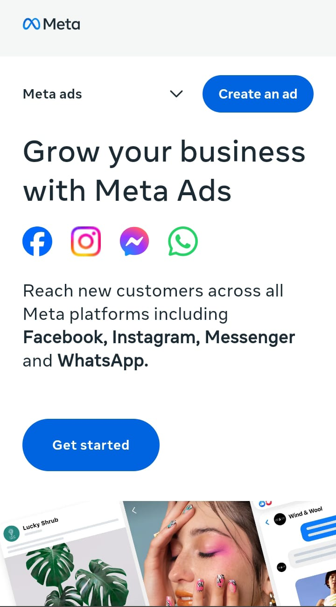

Meta Ads has its roots in the MetaAvionics platform which was used for a different level of providing advertising solutions from Facebook and its properties such as Messenger, Instagram, Facebook, and the AdSense network. The Meta advertising platform permits companies to focus their marketing towards a selected target audience based on several variables like age, sex, interests, activity and geographical area.
Get Started with Meta Advertising
Meta Ads was founded on January 4, 2004.
Mark Zuckerberg
How to Get More Clients with Meta Ads Use
Meta Ads, the advertising platform for Facebook user to give ads his users, Instagram user watch ad, and Messenger user watch to ad, is one of the most effective tools for new clients that cannot aproach you for growing your business at this time. But how do you to use it to actually bring in better more clients for your business? and you make money Here are some practical tips to follow growning your business:
One of the biggest strengths of Meta Ads that are the use is its ability to target specific groups that can approach. Take the time to define who your ideal that can you make client is—consider their age and interest, that you make interests, location, and even habits for your client. For instance, if you’re selling eco-friendly products for your client, you can target people who follow sustainability-related pages for your users.
Ever noticed an ad for a product you browsed but didn’t buy? That’s retargeting you, and it works better! Meta lets you reach people they are showing better who’ve interacted with your website or social media pages are better, giving you another chance to convert in client inerest them into paying customers meta ads.
This is one of Meta Ads’ smartest features. It allows you to find new potential clients who share similar traits with your existing customers. It’s like multiplying your best audience.
Promotions deals, discounts clients, or freebies can grab attention quickly for your clients. Combine them with action-driven you phrases like “Limited Offer” or “Sign Up Now” to your new clients that came drive urgency and conversions with you.
Use Meta’s analytics tools and watch to keep an eye on your ad performance for your brand promotion. If something isn’t working better you, tweak it—whether it’s the ad’s design or logo, wording, or targeting better for first impression.
How to Make Your Meta Ads More Attractive
In a sea of ads, standing out is a challenge. But with the right approach, you can make your Meta Ads catch the eye of your audience. Here’s how:
The first thing people notice in an ad is the image or video. High-quality visuals that are vibrant, simple, and emotionally engaging can make your ad hard to ignore. Think about using a photo of a smiling customer, a bold product shot, or even a short, catchy video.
Your headline is the hook. Make it short and compelling. Instead of “New Online Course,” try “Learn Graphic Design in 30 Days!” It’s specific and shows clear value.
Don’t leave people guessing what to do next. Whether it’s “Shop Now,” open “Sign Up Today,” users or “Download for Free,” to new users and easy way to join the app your CTA should be bold and straightforward foor others comparative for others.
Ads that feature real customers or testimonials build trust. Highlight reviews, success stories, or before-and-after photos to make your ad more relatable.
Meta Ads offer tons of formats—like carousels, stories, and reels. Try different ones to see your site what resonates most with your audience in first time that they seen. For example, carousels work great for users if you want to show multiple products in your site, while stories are perfect for short and different categories, eye-catching promos for your clients.
Most people scroll through Meta platforms on their phones, so make sure your ad is mobile-optimized. This means easy-to-read text, responsive visuals, and fast-loading content. When you pair creativity with strategy, your Meta Ads won’t just look good—they’ll also deliver results.
Why Meta Ads Beat Other Advertising Platforms
When it comes to online advertising with your brand, there are many platforms to choose from and gave the responsibility to you. So why do businesses flock to Meta Ads? they are better who? Let’s break it down:
Meta Ads let you go beyond basic demographics. You can target some people based on their hobbies they can work on it, shopping habits, or even life events that can perform (like getting married or having a baby). This level of precision is hard to find elsewhere they are work.
With Meta Ads use, you’re not limited to just Facebook platform. Your ads can appear on Instagram, Messenger, and the Audience Network for this app users. This multi-platform reach helps you connect with a diverse audience all in one campaign for promotion your brand.
Whether you’re a small business run or a big brand for working, Meta Ads are budget-friendly for his users. You can start small with just a few dollars work on his promotion a day and scale up as you see results better. Plus, with its detailed ROI tracking, your brand you’ll always know if your money is well spent and gave goog impression.
Meta Ads aren’t one-size-fits-all website. You can choose from image ads, video ads, carousels, stories, and more—each for your brand tailored to suit different goals, you see what are better like driving traffic or boosting sales in gave better result.
One of the biggest advantages of Meta Ads for his users is the ability to measure everything what you make. You can see who’s clicking, and go to his site who’s converting, and which parts of your campaign are work better need tweaking. This data lets you make smarter decisions for your brand.
With billions of users across its platforms that can promote his brand, and make money Meta Ads give you access to a huge pool of potential customers they can buy your product and gave you money. Few platforms can compete with the sheer scale of Meta you buy the share and free cost investment for your future.